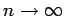

Inhalt Index DeskTop Bronstein

 Unendliche Reihen Fourier-Reihen Trigonometrische Summe und Fourier-Reihe Wichtigste Eigenschaften von Fourier-Reihen
Unendliche Reihen Fourier-Reihen Trigonometrische Summe und Fourier-Reihe Wichtigste Eigenschaften von Fourier-Reihen


Wenn eine periodische Funktion f(x) mit ihren Ableitungen bis zur k-ten Ordnung stetig ist, dann streben für  die Ausdrücke ak+1 und bk+1 gegen Null.